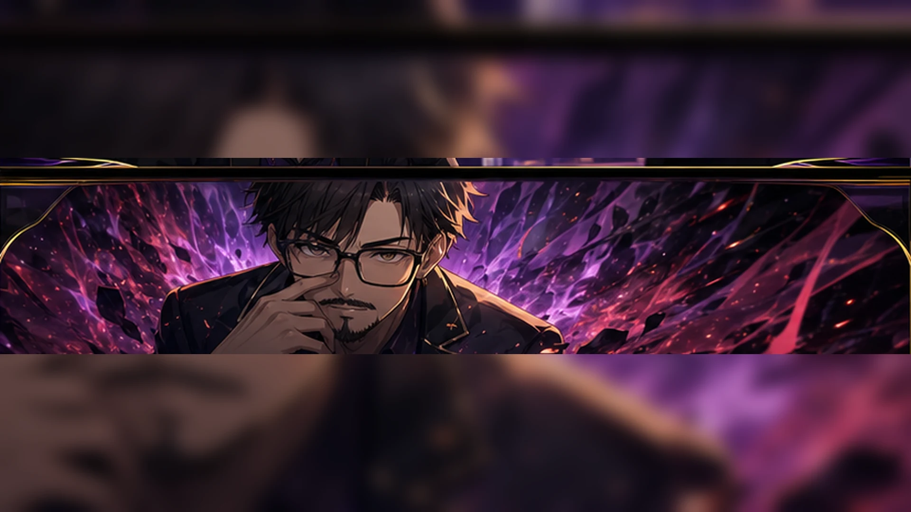
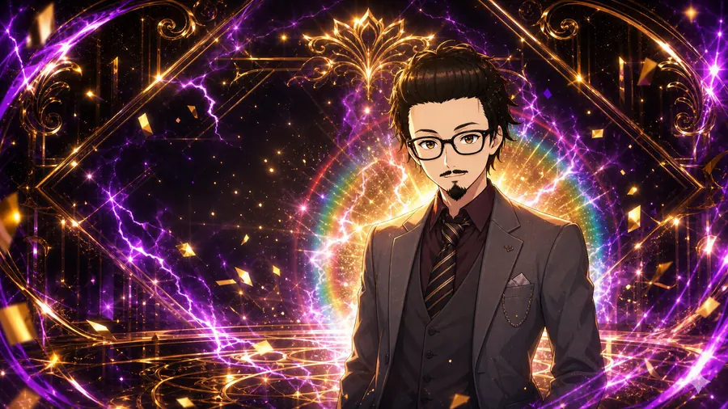
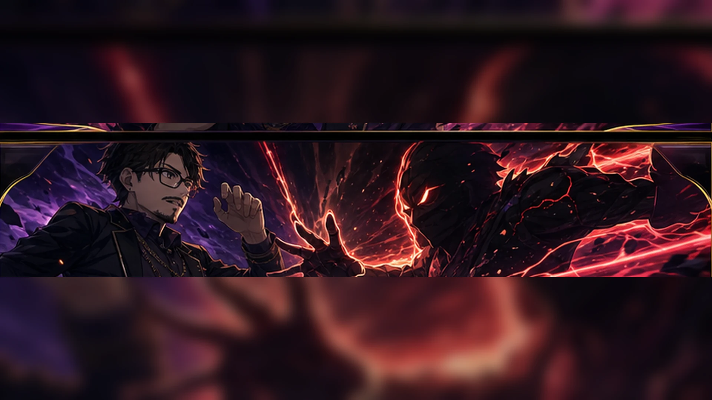
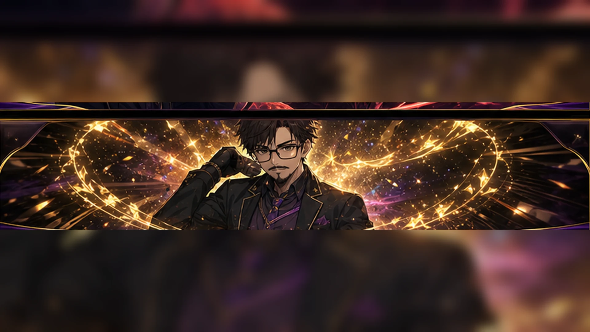

通常7揃い 94
継続率は66/79/84/89%。ストックは1-3個。目押しで揃える入口。


前兆濃厚ムード
確定/ロゴ期待
BB中バトル
継続の瞬間
| BET | 3枚 | |
|---|---|---|
| 有効ライン | 5ライン | |
| 前兆 | 16-32G | 均等 |
| BB | 1SET 30G | 毎G8枚 |
| 役 | 確率 | 払出 |
|---|---|---|
| ベル | 1/40 | 8枚 |
| リプレイ | 1/7.3 | 再遊技 |
| スイカ | 1/119 | 6枚 |
| 角チェリー | 1/135 | 2枚 |
| トシヤチャンス | 1/180 | 1枚 |
| 中段チェリー | 1/247 | 2枚 |
| ハズレ | 約81.26% | 0枚 |
スイカ/チェリーは払い出しだけ目押し依存。小役の見た目で失敗しても、内部状態移行や前兆抽選は成立役どおりに処理される。ベルとリプレイは内部成立時に自動停止。
継続率は66/79/84/89%。ストックは1-3個。目押しで揃える入口。
79%以上に寄り、ストックも2-10個に広がる。完走確定ではないが夢は大きい。
| 状態 | 注目契機 | 前兆突入 | 見どころ |
|---|---|---|---|
| 低確 | 中段チェリー | 25% | 通常へ上がる50%も重要 |
| 通常 | スイカ / チャンス / 中段チェリー | 5% / 3% / 25% | 高確移行も期待 |
| 高確 | レア役全般 | 15-100% | 中段チェリーは前兆確定 |
| 前兆 | 16-32G消化 | 内部当選済み | 画面は最後まで断定しすぎない |